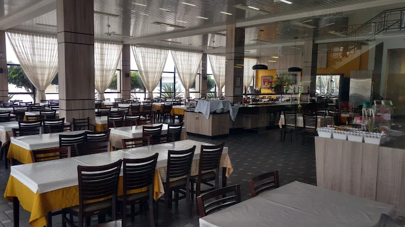
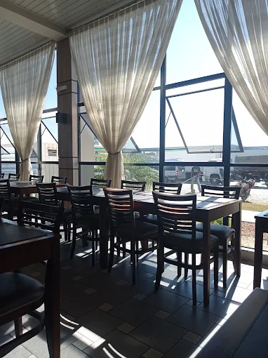
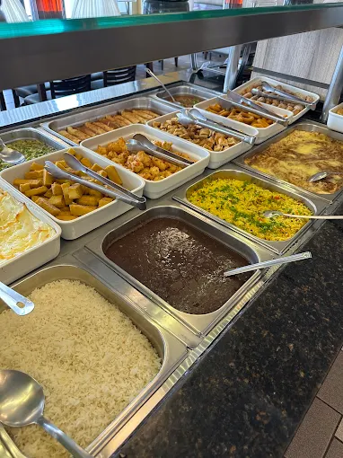
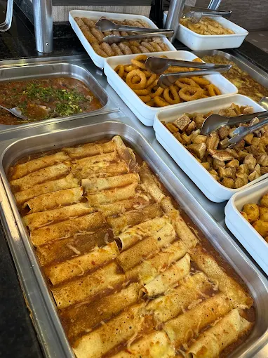
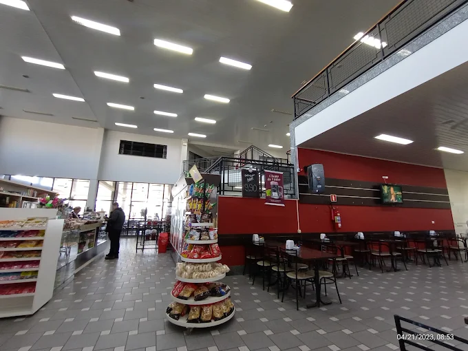

Churrascaria e parada de estrada · Fazenda Rio Grande/PR
Rodízio de carnes e frutos do mar na BR, em Fazenda Rio Grande
A parada completa de quem está na estrada: rodízio de carnes, frutos do mar, lanchonete, pizza e loja de conveniência — tudo no mesmo complexo, dentro do Hotel 21.
4,4 no Google · 5.927 avaliações
Ticket médio R$ 20–60 por pessoa

Aberto até 23h30
Chegou tarde na estrada? A cozinha ainda está de pé.
Rodízio e frutos do mar
Carne na brasa e frutos do mar no mesmo rodízio, sem hora marcada.
Complexo completo
Restaurante, lanchonete, conveniência e hotel no mesmo endereço.
O que servimos
Quem para aqui escolhe o tamanho da fome: do rodízio completo ao lanche rápido antes de pegar a estrada de novo.
-
Rodízio de carnes
Cortes na brasa passando de mesa em mesa, com acompanhamentos e buffet de saladas.
-
Frutos do mar
A parte que surpreende quem só esperava churrasco de beira de estrada.
-
Lanchonete e pizza
Lanche, porção, pizza e prato executivo pra quem tem menos tempo — ou menos fome.
Também atendemos para viagem e entrega.
Parada de quem conhece a estrada
Ficamos na Av. das Américas, dentro do Hotel 21, em Fazenda Rio Grande. É ponto de parada conhecido de caminhoneiro, viajante e família da região — espaço amplo, banheiro limpo e estacionamento pra quem chega de carro ou de caminhão.
- Rodízio de carnes
- Frutos do mar
- Lanchonete
- Loja de conveniência
- Hotel no mesmo complexo
- Espaço amplo
- Estacionamento





Quem veio, contou
Nota 4,4 no Google, de 5.927 avaliações de quem já veio.
Estive no Rodo Center 21 e a experiência foi excelente. O lugar tem uma variedade enorme de comidas, tudo muito bem feito e com produtos de ótima qualidade. A comida é simplesmente maravilhosa, principalmente as carnes — bem preparadas.
Fomos almoçar no domingo para comemorar meu aniversário. Fomos muito bem tratados desde a primeira mensagem de WhatsApp até o momento da saída do buffet. Todos estão de parabéns.
Cardápio variado, com lanche, pizza, porção e refeição. Pedi uma sopa de capeletti que veio no capricho e o prato executivo que veio bem preparado. O atendimento foi tranquilo e o pessoal bem atencioso. O espaço é bem amplo.
Onde estamos
Av. das Américas, 1953 – Eucaliptos, Fazenda Rio Grande/PRCEP 83820-027
Dentro do Hotel 21
Horário
- Todos os diasaté 23h30